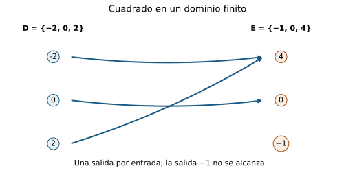
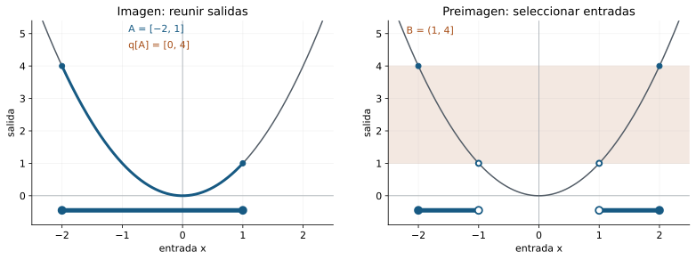
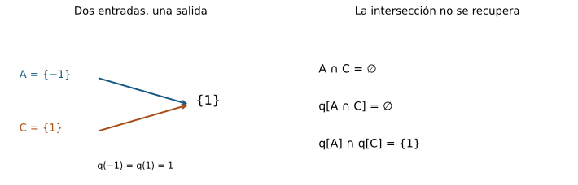
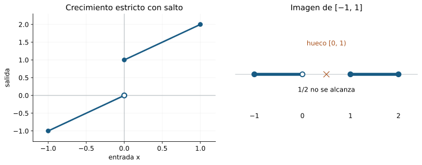
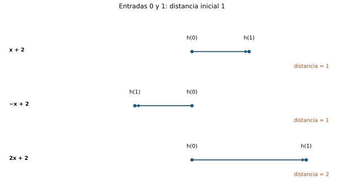
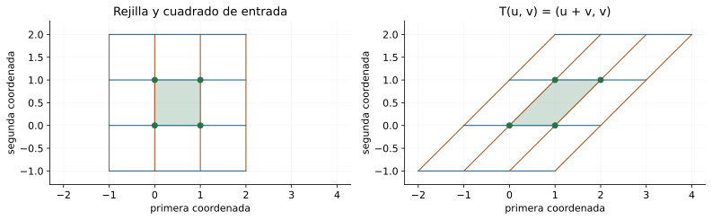
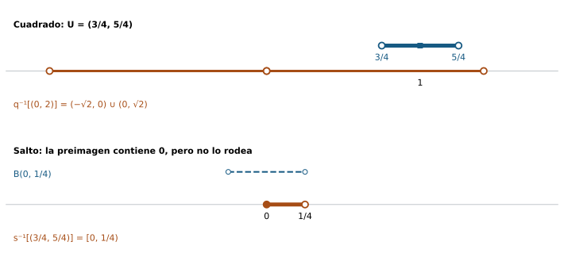

Capítulo 12 — Qué hace una función
Índice del libro · Capítulo 12 · Ejercicios · Soluciones · Soluciones de microcontroles
Una función transforma entradas en salidas y, al hacerlo, transporta conjuntos. Puede conservar información o perderla: fusionar puntos, omitir valores, invertir el orden y cambiar distancias. Queremos describir esas acciones sin confundir el objeto con su fórmula o con el dibujo de su gráfica.
La teoría elemental de funciones será nuestro punto de partida externo; las bolas y vecindades de C04 permitirán formular ventanas de entrada y salida. Reconstruiremos las leyes necesarias con testigos y pertenencias. No necesitaremos límites de funciones, continuidad o derivadas: primero aprenderemos a decir con precisión qué transporta una función.
12.1. Una función tiene un tipo
Escribir \(x^2\) no dice todavía qué entradas admitimos ni en qué conjunto buscamos las salidas. Comparemos
\[ f:\mathbb R\to\mathbb R,\quad f(x)=x^2, \qquad g:[0,\infty)\to[0,\infty),\quad g(x)=x^2. \]
Ambas reglas dan \(4\) al introducir \(2\). Sin embargo, \(-2\) pertenece al dominio de \(f\) y no al de \(g\). Tampoco tienen el mismo codominio. Coinciden numéricamente en sus entradas comunes, pero son funciones distintas. El tipo forma parte de lo que afirmamos.
La asignación y sus tres datos
Una función \(f:D\to E\) consta de un dominio \(D\), un codominio \(E\) y una asignación que a cada \(x\in D\) hace corresponder exactamente un \(f(x)\in E\). «Cada» impide dejar entradas sin salida; «exactamente un» impide asignar dos salidas distintas a una misma entrada. No impide que entradas distintas compartan salida.
Su grafo es el conjunto
\[ G_f=\{(x,f(x)):x\in D\}\subseteq D\times E. \]
Adoptamos la convención tipada: dos funciones son iguales cuando sus dominios, sus codominios y sus asignaciones coinciden. Un grafo dibujado dentro de un plano puede ocultar el codominio declarado. Por ejemplo, las aplicaciones \(\mathbb R\to\mathbb R\) y \(\mathbb R\to[0,\infty)\) dadas por \(x^2\) tienen el mismo conjunto de pares, pero distintos codominios; son objetos tipados distintos.
La regla \(f(x)=\pm\sqrt{x}\), con las dos salidas admitidas para \(x>0\), no define una función real. En cambio, \(f(x)=x^2\) sí: cada entrada tiene una única salida, aunque \(f(-2)=f(2)\). La dificultad de reconstruir una entrada a partir de la salida no viola la definición.
Tres objetos que conviene separar
\(f\) es una función; \(f(2)=4\) es un valor; \(G_f\) es un conjunto de pares. La gráfica cartesiana representa el grafo cuando ambos conjuntos son subconjuntos de \(\mathbb R\). Las flechas entre conjuntos y una tabla representan la misma asignación desde otras perspectivas. Una tabla parcial sólo registra algunas entradas: por sí sola no determina los valores que faltan en un dominio infinito.
Para comparar funciones tipadas \(f,g:D\to E\), basta comprobar \(f(x)=g(x)\) para todo \(x\in D\). Entonces cada par del grafo de una está en el de la otra y recíprocamente. La igualdad de grafos y tipos da igualdad de funciones. Comprobarlo sólo en tres entradas prueba únicamente tres igualdades numéricas.
En particular, \(a:\mathbb N\to\mathbb R\), \(a_n=n^2\), es una sucesión y su grafo tiene puntos \((n,n^2)\) con \(n=0,1,2,\ldots\). No incluye entradas entre naturales. La función real \(f(x)=x^2\) tiene otro dominio. No se debe completar el grafo discreto con una curva y declarar que el objeto sigue siendo la misma sucesión.
El tipo impide errores de composición
Una fórmula también puede esconder una entrada prohibida. Si \(h:\mathbb R\setminus\{0\}\to\mathbb R\) se define por \(h(x)=1/x\), \(h(0)\) no existe como evaluación de esa función. No se corrige esto cambiando el resultado: primero habría que definir otro objeto con otro dominio y una nueva asignación en cero.
La pregunta que acompañará al capítulo será: dado un conjunto de entradas, ¿qué salidas produce?, y dado un conjunto de salidas aceptables, ¿qué entradas lo alcanzan? Para responderla, debemos conservar \(D\) y \(E\) en cada paso.

Antes de seguir
- ¿Basta la fórmula \(x^2\) para determinar una función?
- ¿Qué diferencia hay entre \(f\) y \(f(2)\) si \(f(x)=x^2\)?
- ¿Incumple la definición de función que \(f(-2)=f(2)\)?
- ¿Qué conjunto contiene al grafo de \(f:D\to E\)?
- ¿Son iguales dos funciones con el mismo grafo y codominios distintos bajo nuestra convención?
- ¿Tres evaluaciones iguales prueban igualdad de funciones en \(\mathbb R\)?
- ¿Puede evaluarse en cero \(h:\mathbb R\setminus\{0\}\to\mathbb R\), \(h(x)=1/x\)?
- ¿Incluye el grafo de \(a_n=n^2\) el punto \((1/2,1/4)\)?
12.2. Imagen: transportar un conjunto
Al introducir una entrada, obtenemos un valor. Al introducir un conjunto de entradas, reunimos las salidas que realmente se alcanzan. Si \(f:D\to E\) y \(A\subseteq D\), su imagen directa es
\[ f[A]=\{y\in E:\text{existe }x\in A\text{ con }f(x)=y\}. \]
Usamos corchetes para distinguir esta operación de \(f(x)\). Así, \(f[\{2\}]=\{f(2)\}\) es un conjunto unitario, mientras que \(f(2)\) es un elemento del codominio. El conjunto \(f[D]\), imagen total, puede ser menor que \(E\). El codominio expresa salidas permitidas; la imagen expresa salidas alcanzadas.
La prueba exige un testigo
Para afirmar \(y\in f[A]\) hay que encontrar una entrada \(x\in A\) con salida \(y\). Para calcular una imagen exactamente no basta producir algunos valores: debemos probar que ninguna otra salida aparece y que todas las salidas anunciadas se alcanzan.
Sea \(q:\mathbb R\to\mathbb R\), \(q(x)=x^2\), y \(A=[-2,1]\). Afirmamos \(q[A]=[0,4]\). Si \(x\in A\), entonces \(|x|\le2\) y \(0\le x^2\le4\), de modo que \(q[A]\subseteq[0,4]\). Recíprocamente, para \(y\in[0,4]\), la raíz real no negativa \(\sqrt y\) existe y satisface \(0\le\sqrt y\le2\). La entrada \(x=-\sqrt y\) está en \([-2,0]\subseteq A\) y \(x^2=y\). Por tanto \([0,4]\subseteq q[A]\). La existencia y unicidad de la raíz no negativa se acreditaron en §10.7; no las deducimos de un teorema posterior sobre funciones.
Observe por qué elegimos la raíz negativa: \(\sqrt4=2\) no pertenece a \(A\). Una solución algebraica de \(x^2=y\) que queda fuera del dominio considerado no sirve como testigo. La imagen depende del conjunto de entradas, no sólo de la ecuación.

La imagen reúne, pero no cuenta multiplicidades
Para el conjunto finito \(A=\{-2,-1,1,2\}\), \(q[A]=\{1,4\}\). Cuatro entradas producen dos salidas. Los conjuntos no guardan repeticiones: no escribimos dos copias de \(1\). La identificación de entradas será responsable de algunas pérdidas de información.
Si \(A\subseteq C\subseteq D\), entonces \(f[A]\subseteq f[C]\). En efecto, un testigo \(x\in A\) también está en \(C\). La misma entrada sirve en ambas definiciones. Esta propiedad se llama monotonía de la operación de imagen respecto de la inclusión; no dice que \(f\) sea creciente como función de números reales. El cuadrado respeta esta inclusión aunque no sea creciente en toda la recta.
Además,
\[ f[\varnothing]=\varnothing,\qquad f[\{x\}]=\{f(x)\}. \]
La primera igualdad se debe a la inexistencia de testigos en el vacío. En la segunda, la única entrada permitida es \(x\). Aunque \(D\) sea vacío, la definición sigue funcionando: la función vacía \(\varnothing\to E\) tiene imagen vacía.
La imagen de una ventana debe calcularse
No inferimos \(q[(-2,2)]=(q(-2),q(2))\). Los extremos ni siquiera pertenecen al conjunto de entradas, y esa expresión sería \((4,4)=\varnothing\). El cálculo correcto es \([0,4)\): cero se alcanza, todo cuadrado de una entrada del intervalo es menor que cuatro y, para cada \(0\le y<4\), \(\sqrt y\in(-2,2)\) sirve como testigo. Transportar un intervalo requiere estudiar el mecanismo de la función; no consiste en transportar ciegamente sus extremos.
Antes de seguir
- ¿Qué testigo exige \(y\in f[A]\)?
- ¿Son el mismo objeto \(f(2)\) y \(f[\{2\}]\)?
- Para \(q(x)=x^2\), ¿cuál es \(q[\{-2,2\}]\)?
- ¿Cuál es la imagen del conjunto vacío?
- ¿Implica \(A\subseteq C\) que \(f[A]\subseteq f[C]\)?
- ¿Tiene que coincidir \(f[D]\) con el codominio \(E\)?
- ¿Qué entrada de \([-2,1]\) alcanza \(4\) bajo el cuadrado?
- ¿Cuál es \(q[(-2,2)]\) para \(q(x)=x^2\)?
12.3. Preimagen: seleccionar por la salida
Ahora fijamos las salidas aceptables. Si \(f:D\to E\) y \(B\subseteq E\), definimos la preimagen
\[ f^{-1}[B]=\{x\in D:f(x)\in B\}. \]
Es un subconjunto del dominio. No evaluamos una función inversa; comprobamos una condición sobre la salida de cada entrada. La preimagen está definida para cualquier función, incluso cuando muchas entradas comparten salida o algunas salidas nunca se alcanzan.
Fibras: todas las entradas de una misma salida
La preimagen \(f^{-1}[\{y\}]\) se llama fibra sobre \(y\). Para \(q:\mathbb R\to\mathbb R\), \(q(x)=x^2\),
\[ q^{-1}[\{4\}]=\{-2,2\},\qquad q^{-1}[\{0\}]=\{0\},\qquad q^{-1}[\{-1\}]=\varnothing. \]
Una fibra puede tener dos elementos, uno o ninguno. Lo que es único en una función es la salida de cada entrada, no la entrada de cada salida. La notación \(q^{-1}(4)\) como evaluación de una inversa no está autorizada: \(q:\mathbb R\to\mathbb R\) no es biyectiva.
Dos fibras distintas son disjuntas. Si \(x\) estuviera en las fibras de \(y\) y \(z\), tendríamos \(f(x)=y\) y \(f(x)=z\), luego \(y=z\). Aquí gastamos exactamente la unicidad de salida.
Resolver la condición y después respetar el dominio
Para el mismo cuadrado,
\[ q^{-1}[(1,4]]=\{x\in\mathbb R:1<x^2\le4\} =[-2,-1)\cup(1,2]. \]
La condición equivale a \(1<|x|\le2\). Por eso incluimos \(-2\) y \(2\), excluimos \(-1\) y \(1\), y conservamos dos ramas. La fibra no elige automáticamente una raíz positiva.
Si cambiamos la función a \(r:[0,\infty)\to\mathbb R\), \(r(x)=x^2\), la misma condición produce
\[ r^{-1}[(1,4]]=(1,2]. \]
La rama negativa desaparece porque nunca perteneció al dominio de \(r\). No desaparece por una modificación del conjunto de salidas.
Dos identidades que orientan la selección
Para toda función \(f:D\to E\),
\[ f^{-1}[E]=D,\qquad f^{-1}[\varnothing]=\varnothing. \]
Toda entrada tiene salida en \(E\); ninguna tiene salida en el vacío. También, si \(B\subseteq H\subseteq E\), entonces \(f^{-1}[B]\subseteq f^{-1}[H]\): una salida aceptada por \(B\) es aceptada por \(H\).
Hay una identidad más informativa:
\[ f[f^{-1}[B]]=B\cap f[D]. \]
Para probar la inclusión de izquierda a derecha, si \(y=f(x)\) con \(x\in f^{-1}[B]\), entonces \(y\in B\) y \(y\in f[D]\). Recíprocamente, si \(y\in B\cap f[D]\), existe \(x\in D\) con \(f(x)=y\); como \(y\in B\), ese \(x\) está en \(f^{-1}[B]\), luego \(y\) está en su imagen. La igualdad dice que volver hacia delante recupera sólo las salidas solicitadas que podían alcanzarse.
Si \(B=\{-1,4\}\) para \(q\), la preimagen es \(\{-2,2\}\) y su imagen es \(\{4\}\): el valor imposible \(-1\) no reaparece. La preimagen es una selección de entradas compatibles, no una promesa de que toda salida tenga entrada.
Antes de seguir
- ¿En qué conjunto vive \(f^{-1}[B]\) si \(f:D\to E\)?
- ¿Se necesita que \(f\) tenga función inversa para tomar preimágenes?
- ¿Cuál es la fibra del cuadrado real sobre \(4\)?
- ¿Cuál es la fibra del cuadrado real sobre \(-1\)?
- ¿Cuál es \(f^{-1}[E]\)?
- ¿Cuál es \(q^{-1}[(1,4]]\) para el cuadrado en \(\mathbb R\)?
- ¿Cómo cambia esa preimagen si el dominio se restringe a \([0,\infty)\)?
- ¿Qué recupera \(f[f^{-1}[B]]\)?
12.4. Qué operaciones sobreviven al transporte
Unir dos grupos de entradas y luego transportarlos produce las mismas salidas que transportarlos por separado y unir sus imágenes. Intersectar exige más cuidado: una salida común puede venir de entradas distintas.
Fijemos \(f:D\to E\), \(A,C\subseteq D\) y \(B,H\subseteq E\).
La imagen y sus testigos
Tenemos
\[ f[A\cup C]=f[A]\cup f[C],\qquad f[A\cap C]\subseteq f[A]\cap f[C]. \]
En la primera igualdad, \(y\) pertenece al lado izquierdo si existe \(x\) con \(f(x)=y\) y \(x\in A\) o \(x\in C\). Esto equivale a que \(y\) tenga un testigo en alguno de los dos conjuntos, es decir, a pertenecer a alguna imagen. Ambas implicaciones usan el mismo testigo escogido.
Para la segunda, un testigo en \(A\cap C\) pertenece a los dos conjuntos. Pero en sentido contrario, \(y\in f[A]\cap f[C]\) sólo da \(a\in A\) y \(c\in C\) con \(f(a)=f(c)=y\). No sabemos que \(a=c\).
Con \(q(x)=x^2\), \(A=\{-1\}\) y \(C=\{1\}\), la intersección de entradas es vacía, mientras que las dos imágenes son \(\{1\}\). Así, la inclusión puede ser estricta. Si \(f\) es inyectiva, es decir, \(f(a)=f(c)\) implica \(a=c\), los dos testigos coinciden y pertenecen a \(A\cap C\). En ese caso obtenemos igualdad.

La preimagen conserva las operaciones
Para una entrada fija \(x\in D\) hay una única salida que podemos comparar con ambos conjuntos. Por eso las siguientes equivalencias son exactas:
\[ \begin{aligned} x\in f^{-1}[B\cup H]&\iff f(x)\in B\text{ o }f(x)\in H,\\ x\in f^{-1}[B\cap H]&\iff f(x)\in B\text{ y }f(x)\in H,\\ x\in f^{-1}[E\setminus B]&\iff f(x)\notin B. \end{aligned} \]
La primera condición equivale a pertenecer a \(f^{-1}[B]\cup f^{-1}[H]\); la segunda, a \(f^{-1}[B]\cap f^{-1}[H]\); la tercera, a \(D\setminus f^{-1}[B]\). Por extensionalidad,
\[ \begin{aligned} f^{-1}[B\cup H]&=f^{-1}[B]\cup f^{-1}[H],\\ f^{-1}[B\cap H]&=f^{-1}[B]\cap f^{-1}[H],\\ f^{-1}[E\setminus B]&=D\setminus f^{-1}[B]. \end{aligned} \]
Ninguna de estas pruebas necesita inyectividad o sobreyectividad. Sí necesita los complementos correctos: a la izquierda complementamos dentro de \(E\), a la derecha dentro de \(D\). El criterio \(f(x)\in B\setminus H\) equivale a \(f(x)\in B\) y \(f(x)\notin H\); por el mismo argumento,
\[ f^{-1}[B\setminus H]=f^{-1}[B]\setminus f^{-1}[H]. \]
Qué recupera la vuelta al dominio
Siempre \(A\subseteq f^{-1}[f[A]]\), pues cada \(a\in A\) tiene su salida en \(f[A]\). Para \(q\) y \(A=\{1\}\), el lado derecho es \(\{-1,1\}\): hemos añadido entradas que comparten salida con alguna entrada original. Llamaremos a este conjunto la saturación de \(A\) por las fibras.
Si \(f\) es inyectiva, una entrada \(x\) del lado derecho comparte salida con algún \(a\in A\); entonces \(x=a\), y la inclusión se convierte en igualdad. La hipótesis se utiliza para recuperar la entrada y no para justificar la existencia de preimagen.
La imagen tampoco conserva complementos en general. Para el cuadrado, \(q[\mathbb R\setminus\{1\}]=[0,\infty)\) porque el valor \(1\) aún se alcanza en \(-1\). En cambio, \(\mathbb R\setminus q[\{1\}]=\mathbb R\setminus\{1\}\). Identificar entradas y omitir salidas del codominio impide una ley de complementos. No confundamos esa pérdida con las leyes exactas de selección hacia atrás.
Antes de seguir
- ¿La imagen conserva la unión de dos conjuntos de entradas?
- ¿Qué inclusión siempre vale para la imagen de una intersección?
- Con \(q(x)=x^2\), \(A=\{-1\}\) y \(C=\{1\}\), ¿por qué falla la igualdad anterior?
- ¿Qué hipótesis reúne los dos testigos de una salida común?
- ¿Qué preimagen tiene \(B\cap H\)?
- ¿Cuáles son los universos de los complementos en la ley de preimagen?
- ¿Siempre se cumple \(A=f^{-1}[f[A]]\)?
- ¿Cuál es la preimagen de \(B\setminus H\)?
12.5. Componer, restringir y deshacer
Una transformación puede alimentar otra. Si \(f:D\to E\) y \(g:E\to F\), definimos \(g\circ f:D\to F\) por \((g\circ f)(x)=g(f(x))\). El tipo garantiza que la segunda evaluación está autorizada. Más generalmente, basta que la imagen de \(f\) esté contenida en el dominio de \(g\); entonces se declara explícitamente el tipo de la composición.
Dos etapas hacia delante y hacia atrás
Si \(A\subseteq D\) y \(C\subseteq F\),
\[ (g\circ f)[A]=g[f[A]],\qquad (g\circ f)^{-1}[C]=f^{-1}[g^{-1}[C]]. \]
La primera igualdad se prueba con testigos. Una salida de \((g\circ f)[A]\) es \(g(f(x))\) con \(x\in A\), luego proviene por \(g\) de un elemento de \(f[A]\). Recíprocamente, si \(z=g(y)\) con \(y\in f[A]\), existe \(x\in A\) con \(f(x)=y\), de modo que \(z=g(f(x))\). Para la segunda, una entrada \(x\in D\) satisface \(g(f(x))\in C\) exactamente cuando \(f(x)\in g^{-1}[C]\), es decir, \(x\in f^{-1}[g^{-1}[C]]\). Hacia atrás comprobamos primero el filtro de la última etapa.
Por ejemplo, \(f(x)=x^2\) y \(g(y)=y+1\), ambas reales, dan \((g\circ f)(x)=x^2+1\). Para llegar a \((2,5]\), primero \(y+1\in(2,5]\) exige \(y\in(1,4]\); después \(x^2\in(1,4]\) exige \(x\in[-2,-1)\cup(1,2]\). No se ha invertido el cuadrado como función.
Restringir cambia el objeto
Para \(A\subseteq D\), la restricción \(f|_A:A\to E\) conserva las asignaciones en \(A\). Su imagen es \(f[A]\) y, para \(B\subseteq E\),
\[ (f|_A)^{-1}[B]=A\cap f^{-1}[B]. \]
Ambos lados seleccionan precisamente los \(x\in A\) cuya salida está en \(B\). Restricción y cambio de codominio son decisiones diferentes. Restringir el cuadrado a \([0,\infty)\) hace única la entrada de cada salida alcanzada; declarar luego codominio \([0,\infty)\) hace que todas las salidas declaradas se alcancen.
Cuándo existe una inversa
\(f:D\to E\) es sobreyectiva si \(f[D]=E\), y biyectiva si además es inyectiva. Sólo entonces existe una función inversa \(h:E\to D\) que deshace \(f\) en ambas direcciones:
\[ h\circ f=\operatorname{id}_D,\qquad f\circ h=\operatorname{id}_E. \]
Construyámosla. Para cada \(y\in E\), sobreyectividad proporciona \(x\in D\) con \(f(x)=y\); inyectividad asegura que ese \(x\) es único. Definimos \(h(y)\) como esa entrada. Entonces \(h(f(x))=x\) y \(f(h(y))=y\), que son las identidades anunciadas. Si otra función \(k\) las cumple, \(f(k(y))=y=f(h(y))\) e inyectividad da \(k(y)=h(y)\) para todo \(y\); la inversa es única.
También la condición es necesaria. Si existen las dos identidades, de \(f(x)=f(z)\) obtenemos \(x=h(f(x))=h(f(z))=z\), luego inyectividad. Para cada \(y\in E\), \(x=h(y)\) cumple \(f(x)=y\), luego sobreyectividad. Hemos probado ambas direcciones.
Escribimos \(h=f^{-1}\) sólo tras esta verificación. Ahora sí \(f^{-1}(y)\) es una entrada y \(f^{-1}[B]=h[B]\) es su colección para \(y\in B\). En efecto, \(x\) pertenece al primer conjunto si \(f(x)\in B\), y entonces \(x=h(f(x))\) está en \(h[B]\); recíprocamente \(x=h(y)\) con \(y\in B\) implica \(f(x)=y\in B\).
Para \(f(x)=2x+1\) como aplicación \(\mathbb R\to\mathbb R\), la igualdad de salidas da \(x=z\), y para cualquier \(y\) sirve \(x=(y-1)/2\). La inversa es \(h(y)=(y-1)/2\). Para el cuadrado real completo no existe inversa; para la aplicación \([0,\infty)\to[0,\infty)\) sí, y es la raíz no negativa. El tipo decide qué puede deshacerse.
Antes de seguir
- ¿Qué tipo tiene \(g\circ f\) si \(f:D\to E\) y \(g:E\to F\)?
- ¿Cómo se calcula \((g\circ f)[A]\) por etapas?
- ¿En qué orden se calcula \((g\circ f)^{-1}[C]\)?
- ¿Cuál es el dominio de \(f|_A\)?
- ¿Cuál es \((f|_A)^{-1}[B]\)?
- ¿Qué dos propiedades permiten construir una función inversa \(E\to D\)?
- ¿Cuál es la inversa de \(f:\mathbb R\to\mathbb R\), \(f(x)=2x+1\)?
- ¿Por qué restringir el cuadrado a entradas no negativas no basta para hacerlo biyectivo hacia \(\mathbb R\)?
12.6. Transportar el orden no rellena los huecos
Ya sabemos transportar conjuntos. En la recta podemos preguntar además si una transformación conserva la comparación entre entradas. Sea \(f:D\to\mathbb R\), \(D\subseteq\mathbb R\). Diremos que es no decreciente cuando
\[ x,y\in D,\quad x\le y\quad\Longrightarrow\quad f(x)\le f(y). \]
Es estrictamente creciente cuando \(x<y\) implica \(f(x)<f(y)\). «No creciente» y «estrictamente decreciente» invierten las desigualdades entre salidas. Siempre declaramos cuál sentido usamos: algunas convenciones llaman creciente al caso no estricto.
Orden estricto y recuperación
Una función estrictamente creciente es inyectiva. Si \(x\ne y\), la tricotomía da \(x<y\) o \(y<x\); en ambos casos sus salidas son distintas. La misma prueba sirve para una estrictamente decreciente. Una no decreciente puede ser constante en todo su dominio y no ser inyectiva.
Si \(f\) es no decreciente y \(a,b\in D\) con \(a\le b\), entonces
\[ f[D\cap[a,b]]\subseteq[f(a),f(b)]. \]
Cada entrada \(x\) del conjunto cumple \(a\le x\le b\), de donde \(f(a)\le f(x)\le f(b)\). Esto es una inclusión, no una igualdad prometida: el argumento controla las salidas que existen, pero no produce testigos para todas las salidas intermedias.
Un salto que conserva el orden
Definamos \(s:\mathbb R\to\mathbb R\) por
\[ s(x)=\begin{cases}x,&x<0,\\x+1,&x\ge0.\end{cases} \]
Es estrictamente creciente. Para dos entradas negativas o dos no negativas, la diferencia de salidas es la diferencia de entradas. Si \(x<0\le y\), entonces \(s(x)=x<0<1\le y+1=s(y)\). Son todos los casos para \(x<y\).
Sin embargo,
\[ s[[-1,1]]=[-1,0)\cup[1,2]. \]
En la rama negativa alcanzamos exactamente \([-1,0)\); en la no negativa exactamente \([1,2]\). El valor \(1/2\) queda entre \(s(-1)=-1\) y \(s(1)=2\), pero no tiene entrada. Monotonía estricta no rellena huecos. Un resultado que garantice salidas intermedias necesitará otra hipótesis, que estudiaremos más adelante.

Las funciones afines permiten un cálculo completo
Para \(h(x)=mx+b\) como aplicación real, la diferencia \(h(y)-h(x)=m(y-x)\) decide el orden: creciente estricta si \(m>0\), decreciente estricta si \(m<0\), constante si \(m=0\).
Para calcular las imágenes de intervalos, escribamos \(h(x)=mx+c\), con \(c\) como término independiente. Así,
\[ h[[a,b]]=[ma+c,mb+c]\quad(m>0), \]
\[ h[[a,b]]=[mb+c,ma+c]\quad(m<0). \]
La inclusión sale del orden. Para la inclusión inversa, dado \(t\) entre las salidas extremas, \(x=(t-c)/m\) satisface las desigualdades de entrada, con inversión al dividir por \(m<0\), y alcanza \(t\). La misma prueba para extremos estrictos da imágenes de intervalos abiertos, y permite decidir cada extremo en intervalos semiabiertos. Si \(m=0\) y el intervalo es no vacío, la imagen es \(\{c\}\).
El cuadrado es estrictamente creciente en \([0,\infty)\) y estrictamente decreciente en \((-\infty,0]\). Para \(0\le x<y\), \(y^2-x^2=(y-x)(y+x)>0\). Para \(x<y\le0\), ambos factores tienen signos que dan \(y^2-x^2<0\). Separar ramas explica por qué el cuadrado no conserva el orden en toda la recta y por qué una sola fórmula puede requerir dos mecanismos de transporte.
Antes de seguir
- ¿Qué significa no decreciente en un dominio \(D\subseteq\mathbb R\)?
- ¿Una función estrictamente creciente es inyectiva?
- ¿Una función no decreciente tiene que ser inyectiva?
- ¿Qué controla el intervalo \([f(a),f(b)]\) si \(f\) es no decreciente?
- Para la función de salto \(s\) del texto, ¿se alcanza \(1/2\)?
- ¿Cuál es \(s[[-1,1]]\)?
- ¿Qué signo de \(m\) hace decreciente estricta a \(h(x)=mx+c\)?
- ¿En qué rama es creciente estricta la función cuadrado?
12.7. Distancia y escala: medir la deformación
Conservar el orden no dice cuánto se separan las salidas. Una transformación puede mantener izquierda y derecha mientras amplía las distancias; otra puede invertir el orden y conservar todas las distancias. Mediremos esto mediante pares de entradas.
Escala exacta en una aplicación afín
Si \(h(x)=mx+c\), entonces para todo \(x,y\in\mathbb R\),
\[ |h(x)-h(y)|=|m(x-y)|=|m|\,|x-y|. \]
La traslación \(c\) se cancela. El factor métrico es \(|m|\), mientras que el signo de \(m\) decide la orientación. Para \(m=-1\) se invierte el orden y se conserva la distancia; para \(m=2\) se conserva el orden y se duplica la distancia; para \(m=0\) todas las distancias se vuelven cero.

Una cota uniforme es una afirmación sobre todo el dominio
Una función \(f:D\to\mathbb R\) tiene cota de expansión \(L\), o es \(L\)-Lipschitz, si \(L\ge0\) y
\[ |f(x)-f(y)|\le L|x-y|\qquad\text{para todos }x,y\in D. \]
El mismo \(L\) debe servir para todos los pares. No basta calcular el cociente para dos entradas seleccionadas. La desigualdad tiene sentido también cuando \(x=y\), sin dividir por cero. Si \(0\le L<1\), esta estimación expresa contracción de distancias; si \(L=1\), impide expansión; no exige igualdad exacta.
Por la desigualdad triangular, \(|x|\le|x-y|+|y|\) y \(|y|\le|x-y|+|x|\). Restando obtenemos
\[ \bigl||x|-|y|\bigr|\le|x-y|. \]
Por tanto \(x\mapsto|x|\) tiene cota \(1\), aunque identifica \(x\) y \(-x\). Una cota superior de distancia no garantiza que la entrada pueda recuperarse.
El dominio cambia el control del cuadrado
Para \(q(x)=x^2\),
\[ |q(x)-q(y)|=|x-y|\,|x+y|. \]
Si \(x,y\in[-R,R]\) con \(R>0\), \(|x+y|\le|x|+|y|\le2R\), y obtenemos cota \(2R\). La factorización produce el control; el dominio lo hace uniforme.
No existe una cota finita \(L\) para el cuadrado en toda \(\mathbb R\). Dado cualquier \(L\ge0\), tomemos \(x=L+1\) e \(y=x+1\). Su distancia es \(1\), pero la distancia de salidas es \(2x+1=2L+3>L\). Hemos elegido un par después de recibir la constante propuesta y refutado su universalidad. No necesitamos derivadas.
Control inferior y composición
Si además existe \(c>0\) con
\[ c|x-y|\le|f(x)-f(y)|\qquad(x,y\in D), \]
\(f\) es inyectiva: salidas iguales fuerzan \(c|x-y|=0\), luego \(x=y\). Para la inversa sobre la imagen, \(h:f[D]\to D\), poniendo \(u=f(x)\) y \(v=f(y)\) se obtiene \(|h(u)-h(v)|\le |u-v|/c\). Su dominio es la imagen, aunque el codominio original de \(f\) sea mayor.
Finalmente, si \(f:D\to E\subseteq\mathbb R\) tiene cota \(L\) y \(g:E\to\mathbb R\) tiene cota \(M\), entonces
\[ |g(f(x))-g(f(y))|\le M|f(x)-f(y)|\le ML|x-y|. \]
El producto controla la composición. Estos son controles algebraicos de distancia; su relación con límites y continuidad se desarrollará después, sin usarla como herramienta aquí.
Antes de seguir
- ¿Qué factor multiplica las distancias bajo \(h(x)=mx+c\)?
- ¿Puede una función invertir el orden y conservar todas las distancias?
- ¿De qué puede depender una cota de expansión \(L\)?
- ¿Qué cota de expansión tiene \(x\mapsto|x|\)?
- ¿Qué cota da la factorización del cuadrado en \([-R,R]\) con \(R>0\)?
- ¿Por qué no sirve una cota finita \(L\ge0\) para el cuadrado en toda la recta?
- ¿Qué garantiza una cota inferior \(c|x-y|\le|f(x)-f(y)|\) con \(c>0\)?
- ¿Qué cota tiene una composición de funciones con cotas \(L\) y \(M\) compatibles?
12.8. Representaciones y ventanas de control
Una gráfica organiza entradas horizontalmente y salidas verticalmente; una tabla fija algunas evaluaciones; una representación por flechas muestra identificaciones; una imagen de rejilla revela cómo se deforman direcciones. Cada representación responde preguntas distintas. Ninguna sustituye el tipo ni las pruebas de transporte.
Una rejilla necesita una función planar
Para hacer literal la transformación de una rejilla, ampliamos el universo y lo declaramos:
\[ T:\mathbb R^2\to\mathbb R^2,\qquad T(u,v)=(u+v,v). \]
La entrada es un par y la salida otro par. \(T\) no es una función escalar \(\mathbb R\to\mathbb R\), ni es el grafo de una función escalar. Su inversa es \(S(a,b)=(a-b,b)\): sustituir da \(S(T(u,v))=(u,v)\) y \(T(S(a,b))=(a,b)\). Ambas composiciones están tipadas en \(\mathbb R^2\).
La recta horizontal \(v=k\) se transforma en \((u+k,k)\) y sigue siendo horizontal. La recta vertical \(u=j\) se transforma en \((j+v,v)\), una recta oblicua. En particular, el cuadrado con vértices \((0,0),(1,0),(1,1),(0,1)\) se transforma en el paralelogramo de vértices \((0,0),(1,0),(2,1),(1,1)\). Los lados horizontales conservan longitud; un lado vertical unitario pasa a tener longitud \(\sqrt2\) según la distancia euclídea \(\sqrt{(a-c)^2+(b-d)^2}\). La deformación depende de la dirección, no de un único factor de escala exacto.

La rejilla es un conjunto de rectas; su transporte se define punto a punto por \(T\). No se deduce ninguna propiedad de una región infinita sólo porque un dibujo muestre seis segmentos. Las fórmulas de las rectas y la inversa justifican lo que la figura representa.
Dos ventanas y una sola condición de transporte
Regresemos a \(f:D\to E\), con \(D,E\subseteq\mathbb R\). Para \(A\subseteq D\) y \(B\subseteq E\),
\[ f[A]\subseteq B\quad\Longleftrightarrow\quad A\subseteq f^{-1}[B]. \]
Si \(f[A]\subseteq B\), cada \(x\in A\) tiene \(f(x)\in f[A]\subseteq B\), luego \(x\in f^{-1}[B]\). Recíprocamente, si \(A\subseteq f^{-1}[B]\) y \(y\in f[A]\), un testigo \(x\in A\) cumple \(f(x)=y\) y \(f(x)\in B\); entonces \(y\in B\). Las dos implicaciones mantienen el tipo de los conjuntos.
Con \(x_0\in D\) y radios \(r,\rho>0\), podemos aplicar esta equivalencia a
\[ U=D\cap B(x_0,r),\qquad V=E\cap B(f(x_0),\rho). \]
Transportar toda la ventana de entrada dentro de la ventana de salida equivale a que la primera esté contenida en la preimagen de la segunda. Son radios fijos, no una definición de límite. Una función arbitraria puede incumplir la inclusión, aunque el centro sí esté en la preimagen.
Para \(q(x)=x^2\), \(x_0=1\), \(r=1/4\) y \(\rho=1\), las entradas de \(U=(3/4,5/4)\) satisfacen \(|x+1|<9/4\), por lo que
\[ |q(x)-q(1)|=|x-1|\,|x+1|<\frac14\frac94=\frac9{16}<1. \]
Así \(q[U]\subseteq(0,2)\), y equivalentemente \(U\subseteq q^{-1}[(0,2)]\). Hemos certificado la inclusión mediante una estimación; la apariencia de la parábola no es la prueba.
Pertenecer no es rodear
Para la función de salto \(s\) de §12.6, \(s(0)=1\). La preimagen de la bola \(B(1,1/4)=(3/4,5/4)\) es \([0,1/4)\). En la rama negativa no hay salida positiva; en la no negativa la condición es \(3/4<x+1<5/4\), que recortada por \(x\ge0\) da ese intervalo.
La preimagen contiene \(0\), pero no es vecindad de \(0\) en la recta: ninguna bola de radio positivo centrada en cero cabe en ella, pues siempre contiene entradas negativas. Es la distinción de C04 aplicada a una selección por salidas. El transporte de ventanas planteará nuevas preguntas en el capítulo siguiente.
Volvemos a la pregunta inicial: una función transporta puntos y conjuntos; puede identificar entradas, omitir salidas, invertir el orden o deformar distancias. Imagen, preimagen, tipo y estimaciones nos permiten especificar qué ocurre antes de introducir cualquier teoría de límites de funciones.

Antes de seguir
- ¿Qué tipo tiene \(T(u,v)=(u+v,v)\) en el texto?
- ¿Cuál es la inversa de esa transformación de rejilla?
- ¿En qué se transforma la recta \(u=j\) bajo \(T\)?
- ¿Multiplica \(T\) todas las longitudes por un mismo factor?
- ¿Qué inclusión de entradas equivale a \(f[A]\subseteq B\)?
- ¿Por qué se recorta \(B(x_0,r)\) por \(D\) al usarla como ventana de entrada?
- Para el cuadrado, ¿qué cota certifica la ventana de radio \(1/4\) alrededor de \(1\) hacia radio \(1\) alrededor de su salida?
- ¿Es vecindad de cero la preimagen \(s^{-1}[B(1,1/4)]=[0,1/4)\)?
Índice del libro · Capítulo 12 · Ejercicios · Soluciones · Soluciones de microcontroles